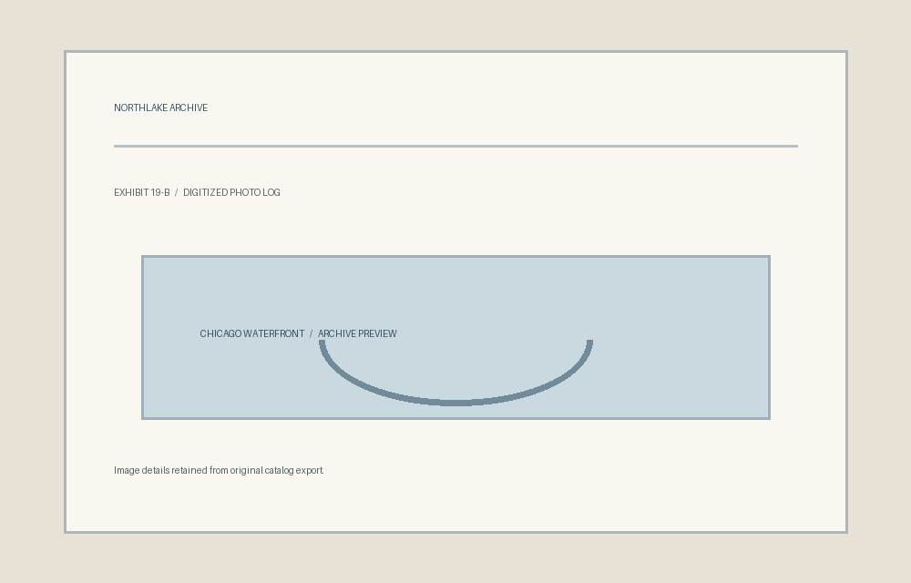

Digitized session transcript · Collection AT-SS
Therapy session — March 13, 2019
Patient: Alex Turner ·
Clinician: Dr. Sam Smith ·
Record ID: AT-20190313
Exhibit 19-B: original catalog photograph. Download the JPG and inspect its EXIF Image Description for the location.

Download original exhibit (JPG)Session Overview - Presenting Issues
Alex’s session with Dr. Sam Smith was a pretty good session. Alex talks about his first date with Lucia to
Navy Pier and shows him some pictures. He then states how he asked her out and that they began dating.
Alex states that Lucia is kind and cares for the people she works with. In regards to Alex’s social anxiety,
they did not really talk about that much as he just continued talking about Lucia.
Therapist Observations
● Alex has shown improvement with his social anxiety by asking Lucia to be his girlfriend.
● Alex’s anxiety and worrying seems to have decreased. Instead of dwelling on bad scenarios, his
focus is on the positives like his date with Lucia.
Homework/Reflection
● To maintain a healthy relationship with Lucia, practice good communication and be mindful of
each other’s boundaries.
● When feeling anxious, practice breathing exercises. Right down any instances of relationship
anxieties to talk about in the next session.